Lesson 6: Visualising and Analysing Time-Oriented Data
What will you learn from this lesson?
Characteristics of time-series data
Classic ways of graphing time
Time-series patterns
Time-series data visualization
Interactive techniques for time-series data visualisation
In this lesson, I am going to share with you methods and best practice for visualising and analysing time-series data. It is organised into five main sections. First, we will examine different format of time series data. This is followed by a review of selected inspiring data visualisation for revealing time series patterns. In section three, we will examine different time-series patterns graphically. In section 4, I will introduce selected not so commonly used time-series data visualisation techniques. Lastly, in section 5, we will examine how interactivity and animation can be used to enhance visual time-series data discovery.
Characteristics of time-series data
A typical time-series data table

The data table shows a typical time-series data. The first column contains the time series values in calender month and year. It is important to note that the values must not be in character data type. The next four columns are called time-series variables. They can be categorical or numeric data type.
Characteristics of time-series data
Not so friendly time-series data
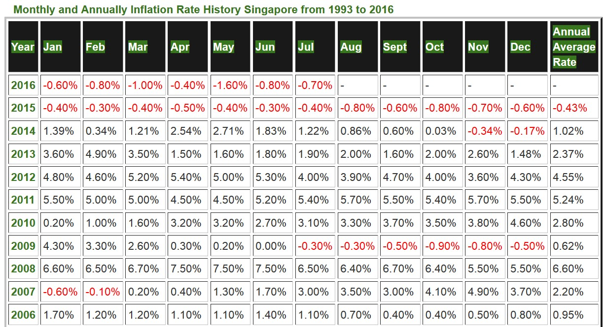
The data table in this slide is an example of time-series data which was not organised in machine understandable time-series manner. As shown on the slide earlier, a machine understandable time-series data must be organised in rows and columns whereby of of the column must contain the date/time values. In this example, the data need to be reformatted before they can be visualised.
Characteristics of time-series data
Not so friendly time-series data
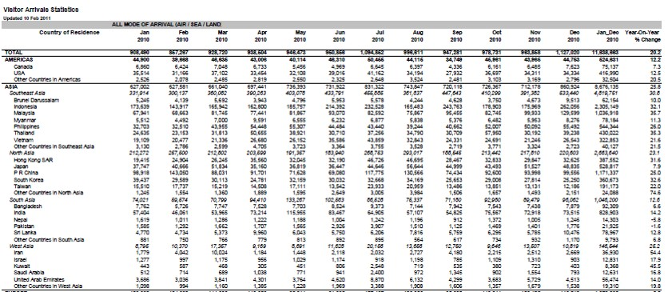
This slide shows a typical reporting table with many formatting features such as column sub-total, row sub-total, spacing, rows separators etc. Again, this table need to be tidied before it can be used to build tiem-series visualisation effectively.
Characteristics of time-series data
Not so friendly time-series data
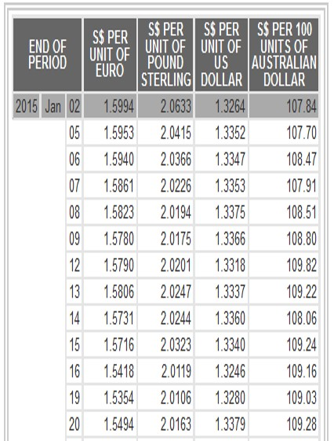
The table on the slide is another good example of not so friendly time-series data set. As you can see, the temporal field was splitted into three columns and the Year and Day fields are in numeric and Month field is in character. Also note that many rows for Year and Month fields were empty. In view of this, this data also need to be tidied before it can be used to build data visualisation.
A short visual history of time-series graphs
Playfair’s Commercial and Political Atlas (1786)

Reference: William Playfair’s trade-balance time-series chart, Commercial and Political Atlas, 1786.
In this section, I am going share with you five very well designed time-series data visualisation and hope they inspired you. The first data visualisation is Playfair’s Commercial and Political Atlas (1786). This is not a typical time-series line graph. As you can see, the author put in conscious effort to shade the space between the import and export curve in order to reveal time interval with trade deficit and time interval with trade surplus.
A short visual history of time-series graphs
Playfair’s Chewing at One View Chart (1821)
Reference: William Playfair’s Price of Wheat
This data visualisation is also a creation of William Playfair. It is make up of two graphical methods namely bar chart and line graph. Bar chart was used to show the price trend of the quarter of wheat and line graph was used to reveal wage trends of labour by the week.
A short visual history of time-series graphs
Bump Chart shows rank of the most populous cities at each census: 1790-1890
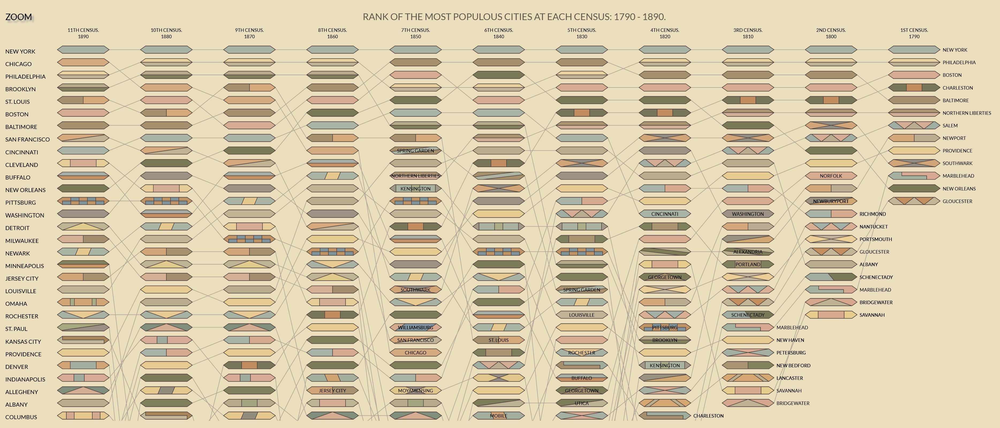
- An interactive version here
This data visualisation shows rank of the most populous cities at each census 1790-1890. Instead of using lines, this data visualisation using ellipses. The more recent times were on the left of the data visualisation and the earlier times were on the right. Note that the original data visualisation was static.
A short visual history of time-series graphs
Multiple charts showing records of the Weather in New York City for December, 1912.

This data visualisation shows record of the Weather in New York City for December, 1912. The bold line indicates temperature in degrees Fahrenheit. The light solid line shows wind velocity in miles per hour. The dotted line depicts relative humidity in percentage from readings taken at 8 a.m. and 8 p.m. Arrows portray the prevailing direction of the wind. Initials at the base of the chart show the weather conditions as follows: S, clear; PC, partly cloudy; C, cloudy; R, rain; Sn, snow.
Time-series graph that change public understading
The Hockey Stick Chart
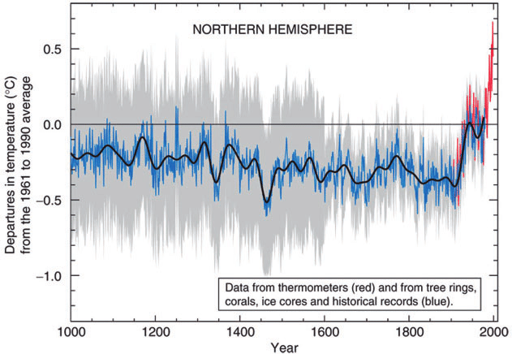
Reference: Michael E. Mann, Raymond S. Bradley, Malcolm K. Hughes (1999) “Northern hemisphere temperatures during the past millennium: Inferences, uncertainties, and limitations”. Geophysical Research Letters, Vol. 26, No. pp. 759-762.
Hockey stick graphs present the global or hemispherical mean temperature record of the past 500 to 2000 years as shown by quantitative climate reconstructions based on climate proxy records. These reconstructions have consistently shown a slow long term cooling trend changing into relatively rapid warming in the 20th century, with the instrumental temperature record by 2000 exceeding earlier temperatures. It is a good example of how data visualisation can be used to create global awareness of rapid warming in the 20th century.
Time-series data patterns
Trend
Variability
Rate of change
Co-variation
Cycles
Exceptions
In this section, I am going share with you time-series characteristics reveal visually.
Time-series Patterns: Trend
- The overall or general direction of change in a series of time-series values is called the trend.
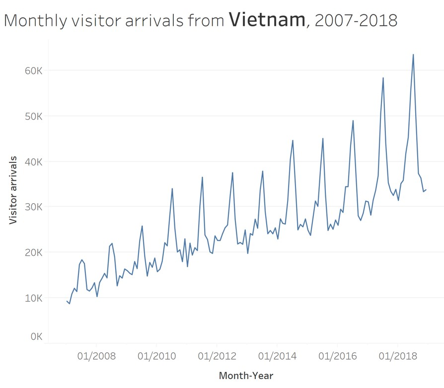
Time-series Patterns: Trend
- An upward trend.
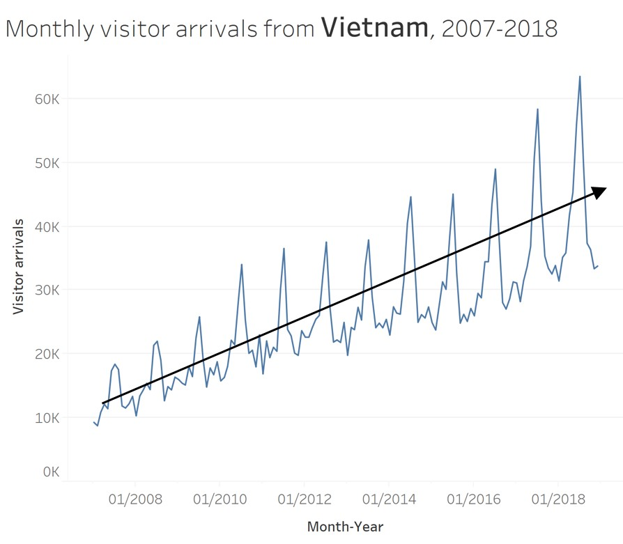
This line graph reveals an upward trend of monthly visitor arrivals from Vietnam between 2007-2018.
Time-series Patterns: Trend
- A mixed trends.
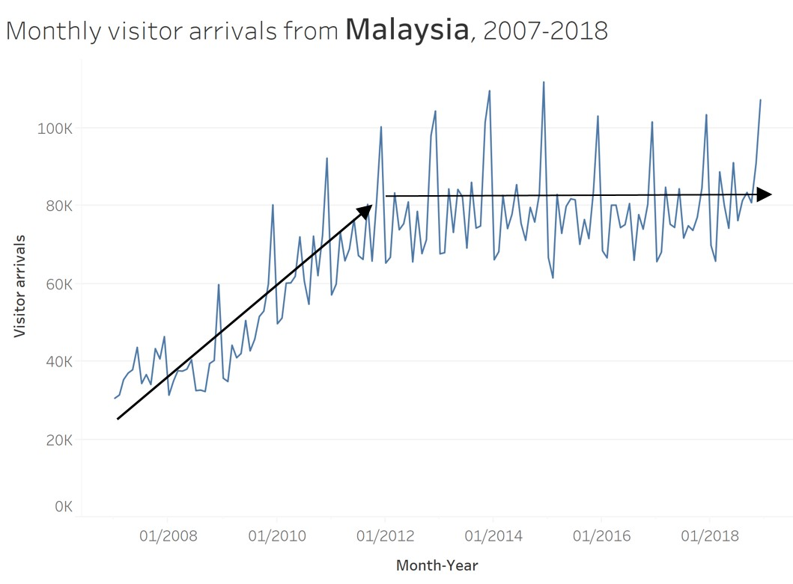
This line graph, on the other, reveals a mixed of upward and plateau trends of monthly visitor arrivals from Malaysia between 2007-2018.
Time-series Patterns: Variability
- The average degree of change from one point of time to the next throughout a particular span of time.
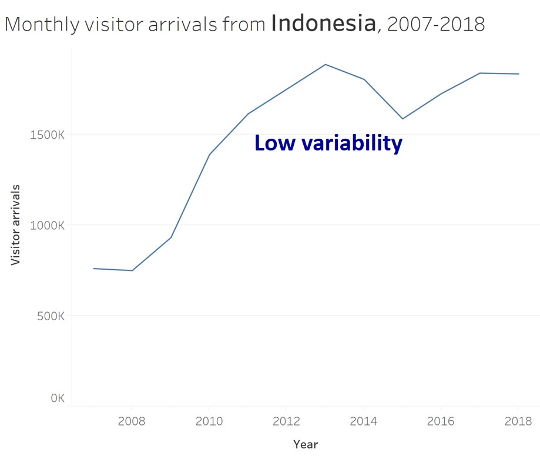

In order to show variability, we should avoid using a highly aggregated time interval like the line graph shown on the left of the slide.
Time-series Patterns: Cycles
Cycles are patterns that repeat at regular intervals.
From the line graph, we can see that visitor arrivals from United Kingdom reach its peak on January and lowest on May every year.

Time-series Patterns: Rate of change
- The percentage difference between one value to the next value.

Time-series Patterns: Exceptions
- Values that fall outside the norm.
This line graph show the significant impact of SAR on the visitor arrivals pattern to Singapore.
Line graph design tips
Not all line graphs should start at zero!


In this section, I am going to share with you some tips when we want to visualise time-series data. This slide shows that by keeping the y-axis starts at zero might not be able to reveal time-series patterns or trends effectivelly. Hence, it is important to customise the y-axis in search a way that it can reveal the time-series patterns effectively like the line graph on the right of the slide.
Line graph design tips
Multiple lines in a single graph is less effective than trellis line graph

In order to support effective comparison, sometime trellis line graphs are more functional then a composite line graph as shown on the right of the slide.
Line graph design tips
Not all time-series graphs have time on the x-axis

The connected scatter plot below reveals changes over time by joining each time event points on the scatter plot. The historical trail can be a effective alternative to animation.
Line graph design tips
Label line graph instead of using legend

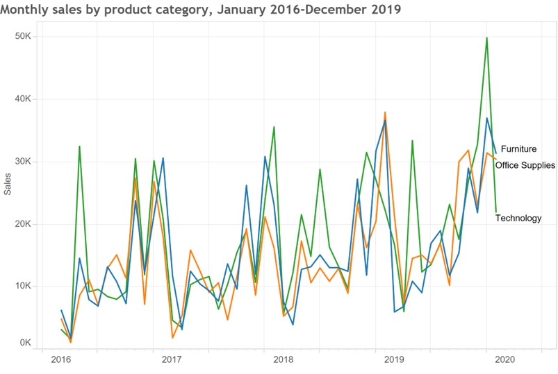
When ever possible, it is more effective to label on the line directly as shown on the line graph on the right instead of using legend.
Line graph design tips
- In order to support comparison over time effectively, reference line should be used.
Line chart without reference line

Line chart with reference line

Line graph design tips
Line chart with reference band
The reference used don’t have to confine a single line. A confidence interval or quantile range can be used too.
Beyond Line Graph
Control Chart: An analytical line chart
Control charts, also known as Shewhart charts (after Walter A. Shewhart) or process-behavior charts. They are a statistical process control tool used to determine if a manufacturing or business process is in a state of control. Beside the average line, there are two additional lines namely the upper control limit (UCL) and lower control limit (LCL). Any data points located beyond UCL or LCL will be flag out as anomalies.
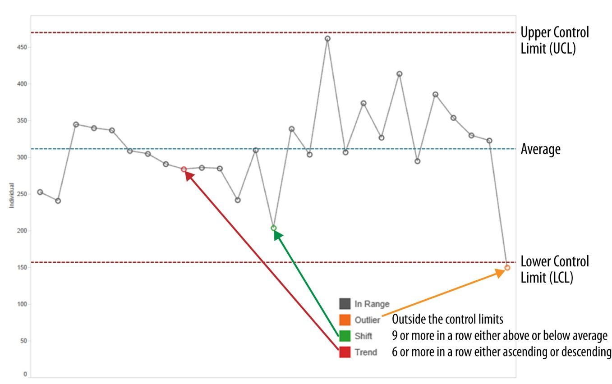
Control chart in real world
In this use-case, control chart was used to display numbers of views of a digital news platform. Notice that two sets of reference lines were used. One for 5 and 95 percentile and upper and lower quantile.
Challenge I: Visualising Change between Two Points in Time
Bar chart method
Slopegraphs come to rescue!
Slopegraphs compare changes usually over time for a list of nouns located on an ordinal or interval scale.
Learning from the Master
Visit Tableau Public to try out the interactive version and visit this link to learn more.

Challenge II: Visualising cyclical patterns
Classic line graph method

Challenge II: Visualising cyclical patterns
Solution: Cycle plot
Reference: Intro to Cycle Plot
Challenge II: Visualising cyclical patterns
Solution: Sunburst diagram method

Challenge III: Massive Time-series Data
Classic line graph method
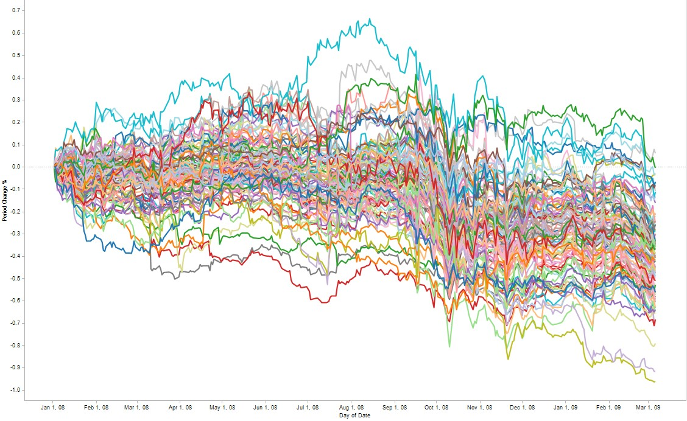
Line graph will not be effective to reveal high number of time series lines (for example 50)
Challenge III: Massive Time-series Data
Solution: Horizon graph
By dividing an area chart into consecutive layers, horizon graphs present time-series data in a compact space while preserving resolution.
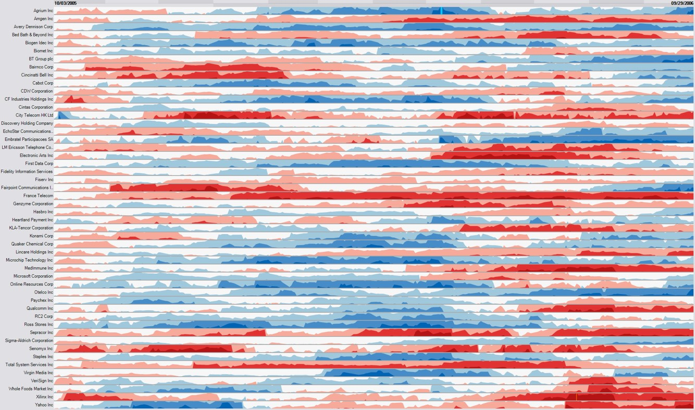
Reference: Time on the Horizon
The basic construct of a horizon graph
Figure on the right shows the process of constructing an horizon graph.
Reference: The Developmentof the Horizon Graph
Horizon graph in Tableau

Source: Unemployment Horizon Chart.
This video provides step-by-step explanation on how to create a horizon graph using Tableau.
Challenge IV: Distribution over time
Line graph method
Boxplot method

Alternative Time-series Data Visualisation methods: Calendar Heatmap
It is a 2-dimensional calendar view that shows a value over time through color coding it, often with warmer colors indicating higher values (hence heatmap).

Source: Calender heatmap
Alternative Time-series Data Visualisation methods
Stream Graph (also know as ThemeRiver)
A streamgraph, or stream graph, is a type of stacked area graph which is displaced around a central axis, resulting in a flowing, organic shape.

Reference: Steam graph
Visualising Change Over Time
Animated bubble plot (or motion chart)
A motion chart displays changes over time by showing movement within the two-dimensional space and changes in the size and color of the bubbles.
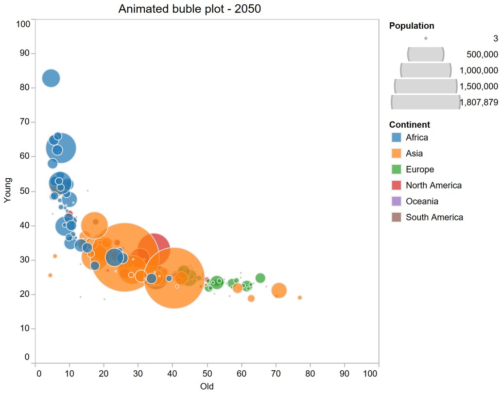
References
Claus. O. Wilke (2019) Fundamentals of Data Visualisation, O’Reilly. USA. Chapter 13 Visualizing time series and other functions of an independent variable and Chapter 14 Visualizing trends
Slopegraphs for comparing gradients: Slopegraph theory and practice
The Development of the Horizon Graph